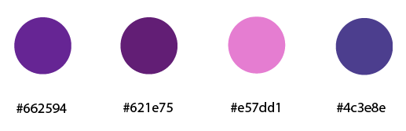

Elecciones cromáticas y tipografícas
Paleta Cromática
Para el diseño del sitio web se eligió una paleta de colores armónica, donde predomina el violeta.

Tipografía
Para el diseño del sitio web se eligió una tipograía llamada Roboto Condensed.
Roboto Condensedzz
ABCDEFGHIJKLMNÑOPQRSTUVWXYZ
abcdefghijklmnñopqrstuvwxyz
0123456789